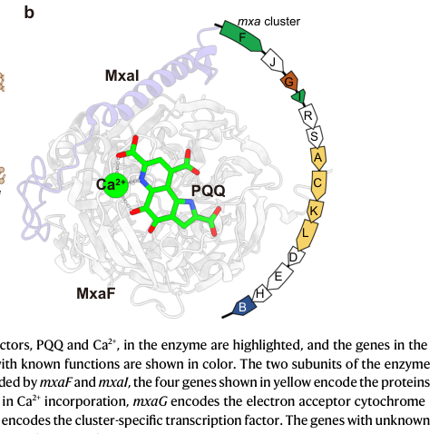

mxaC encodes a membrane-associated auxiliary protein of 355 amino acids that is essential for methanol oxidation in Methylorubrum extorquens AM1. MxaC contains a von Willebrand factor A (vWFA) domain (residues 86-259) that likely mediates protein-protein interactions and metal coordination, and two transmembrane helices (residues 51-72 and 307-325) that anchor it in the membrane. MxaC is required for incorporation of calcium into the active site of methanol dehydrogenase (MxaFI). Together with MxaS and MxaL (which also contain vWFA domains) and MxaR (a MoxR-class AAA+ ATPase), MxaC likely forms a MoxR/VWA complex specialized in metal cofactor insertion. This evolutionarily conserved prokaryotic assembly machinery facilitates Ca²⁺ transport and incorporation into the PQQ-dependent methanol dehydrogenase complex. MxaC is part of the COG2304 family and is conserved across methylotrophic bacteria that utilize the calcium-dependent methanol oxidation pathway.
Definition: The aggregation, arrangement and bonding together of methanol dehydrogenase complex components
| GO Term | Evidence | Action | Reason |
|---|---|---|---|
|
GO:0046872
metal ion binding
|
ISS
PMID:7592474 Identification and nucleotide sequences of mxaA, mxaC, mxaK,... |
NEW |
Summary: MxaC contains a von Willebrand factor A (VWA) domain that typically mediates metal coordination, and the gene is required for incorporation of Ca2+ into the catalytic center of methanol dehydrogenase (MxaF). The 2025 assembly study frames the metal-loading role as inferential rather than a directly demonstrated biochemical activity of MxaC, so this ISS annotation is retained as a domain-based inference only.
Reason: MxaC is required for Ca2+ incorporation into the MxaF active site and contains a VWA domain (residues 86-259) of a family that can coordinate divalent cations via a MIDAS motif. Direct metal binding by MxaC itself has not been demonstrated, so this remains an inferred (ISS) annotation.
Supporting Evidence:
file:METEA/mxaC/mxaC-deep-research-falcon.md
with the assistance of proteins … MxaC … Ca2+ is incorporated into the catalytic center of MxaF
file:METEA/mxaC/mxaC-deep-research-falcon.md
von Willebrand factor A (VWA) domain-containing auxiliary protein
|
|
GO:0016020
membrane
|
IEA
file:METEA/mxaC/mxaC-uniprot.txt |
NEW |
Summary: MxaC is predicted to contain two transmembrane helices (residues 51-72 and 307-325; Phobius) that anchor it in the membrane. The falcon report places the auxiliary MxaC at the periplasm-facing MDH biogenesis pathway but notes no direct localization assay exists for MxaC itself.
Reason: UniProt (Phobius) predicts two transmembrane helices, supporting membrane association. This is a low-resolution computational (IEA) localization; the precise topology and periplasmic association are inferred from MDH pathway context, not directly demonstrated.
Supporting Evidence:
file:METEA/mxaC/mxaC-uniprot.txt
TRANSMEM 51..72
file:METEA/mxaC/mxaC-uniprot.txt
TRANSMEM 307..325
|
|
GO:0065003
protein-containing complex assembly
|
IMP
PMID:7592474 Identification and nucleotide sequences of mxaA, mxaC, mxaK,... |
NEW |
Summary: MxaC is required for production of active methanol dehydrogenase. Classic mutant complementation (Morris et al., 1995) showed mxaC is required for methanol oxidation, and a 2025 mechanistic study showed that deleting mxaC yields inactive MDH, placing MxaC among the auxiliary proteins required for MDH maturation/assembly.
Reason: Mutant complementation showed mxaC is required for methanol oxidation, and deletion of mxaC produces inactive MDH, indicating a role in assembly/maturation of the methanol dehydrogenase complex.
Supporting Evidence:
PMID:7592474
mutant complementation studies showed that mxaC is required for methanol oxidation
file:METEA/mxaC/mxaC-deep-research-falcon.md
auxiliary proteins required for MDH maturation
|
|
GO:0051131
chaperone-mediated protein complex assembly
|
NAS | NEW |
Summary: MxaC is a VWA-domain auxiliary factor proposed to act with the MoxR-class AAA+ ATPase MxaR (and VWA proteins MxaS, MxaL) in a MoxR/VWA module during MDH biogenesis. MoxR/VWA systems function as chaperone-like assembly factors, supporting this term as the most specific available description of MxaC's assembly role. MxaC is not part of the mature MxaFI enzyme.
Reason: Falcon deep research groups MxaC with MxaR/MxaS/MxaL in a putative MoxR/VWA assembly module acting as a chaperone-like maturation machinery for methanol dehydrogenase; MxaC does not form part of the finished enzyme.
Supporting Evidence:
file:METEA/mxaC/mxaC-deep-research-falcon.md
MoxR/VWA complex
file:METEA/mxaC/mxaC-deep-research-falcon.md
grouped with other VWA proteins (e.g., MxaS, MxaL) and a **MoxR-class AAA+ ATPase (MxaR)**
|
|
GO:0006816
calcium ion transport
|
NAS | NEW |
Summary: MxaC participates in incorporation of Ca2+ into the catalytic center of MxaF during MDH maturation. Whether MxaC mediates membrane transport of Ca2+ or only its delivery/loading at the active site is not established; the falcon report frames the metal-handling role as inferential and does not demonstrate transmembrane Ca2+ transport.
Reason: The supported role is Ca2+ incorporation/loading during MDH assembly. This broad transport term is added tentatively (NAS) to capture the calcium-handling aspect; demonstrated transmembrane calcium transport by MxaC has not been shown.
Supporting Evidence:
file:METEA/mxaC/mxaC-deep-research-falcon.md
with the assistance of proteins … MxaC … Ca2+ is incorporated into the catalytic center of MxaF
|
The research report should be a detailed narrative explaining the function, biological processes, and localization of the gene product. Citations should be given for all claims.
You should prioritize authoritative reviews and primary scientific literature when conducting research. You can supplement
this with annotations you find in gene/protein databases, but these can be outdated or inaccurate.
We are specifically interested in the primary function of the gene - for enzymes, what reaction is catalyzed, and what is the substrate specificity? For transporters, what is the substrate? For structural proteins or adapters, what is the broader structural role? For signaling molecules, what is the role in the pathway.
We are interested in where in or outside the cell the gene product carries out its function.
We are also interested in the signaling or biochemical pathways in which the gene functions. We are less interested in broad pleiotropic effects, except where these elucidate the precise role.
Include evidence where possible. We are interested in both experimental evidence as well as inference from structure, evolution, or bioinformatic analysis. Precise studies should be prioritized over high-throughput, where available.
The Methylorubrum extorquens AM1 gene mxaC (UniProt accession C5AQA2) encodes MxaC, a von Willebrand factor A (VWA) domain-containing auxiliary protein that participates in biogenesis/maturation of the Ca2+-dependent, PQQ-dependent methanol dehydrogenase (MxaFI) rather than catalyzing methanol oxidation directly. The best-supported functional role for MxaC is in the Ca2+ incorporation step needed to produce an active MxaF catalytic center, likely as part of a MoxR/VWA-type assembly module (MxaR + VWA proteins including MxaC). Loss of mxaC yields inactive MDH that can be rescued by Ca2+ treatment, consistent with a role in metal loading during MDH maturation. (zhou2025decipheringtheassembly pages 2-3, zhou2025decipheringtheassembly pages 4-5)
Genomic analysis of M. extorquens AM1 identified a canonical mxa methanol-oxidation gene cluster (a ~12.5 kb cluster), and mxaC is explicitly included in this cluster (mxaFJGIRSACKLDEHB). This places mxaC in the correct organism and in the expected methanol-oxidation genetic module, supporting that the retrieved literature refers to the intended target rather than an unrelated “mxaC” in another species. (chistoserdova2003methylotrophyinmethylobacterium pages 4-5)
A recent primary study of MDH assembly in M. extorquens AM1 describes MxaC as a VWA domain-containing protein grouped with other VWA proteins (e.g., MxaS, MxaL) and a MoxR-class AAA+ ATPase (MxaR) in a putative MoxR/VWA complex implicated in MDH maturation. This matches the user-provided UniProt domain expectation (VWF_A/VWA-like). (zhou2025decipheringtheassembly pages 4-5)
Within the methanol oxidation module, only a subset of genes encode catalytic/electron-transfer components (e.g., MxaF/MxaI as structural subunits; cytochrome cL electron acceptor), while others encode auxiliary factors required for correct enzyme maturation, including cofactor insertion and metal loading. mxaC falls in this “auxiliary biogenesis factor” category. (chistoserdova2003methylotrophyinmethylobacterium pages 4-5, zhou2025decipheringtheassembly pages 2-3)
VWA domains frequently appear in bacterial protein-quality-control/assembly systems, where they can act as adaptor/scaffold-like proteins collaborating with AAA+ ATPases. In the MDH context, MxaC is described as a VWA-domain auxiliary factor that likely collaborates with the AAA+ protein MxaR in a MoxR/VWA module during enzyme maturation. (zhou2025decipheringtheassembly pages 4-5)
The mxa cluster of M. extorquens AM1 contains multiple genes required for methanol oxidation, including the structural MDH subunits and accessory genes; mxaC is embedded in this cluster, consistent with a dedicated function in the methanol oxidation system. (chistoserdova2003methylotrophyinmethylobacterium pages 4-5)
A 2025 mechanistic study of PQQ-dependent MDH assembly in M. extorquens AM1 identifies MxaC among a defined set of auxiliary proteins required for MDH maturation and specifically implicates these auxiliaries in Ca2+ incorporation into the catalytic center of MxaF (“with the assistance of proteins … MxaC … Ca2+ is incorporated into the catalytic center of MxaF”). (zhou2025decipheringtheassembly pages 4-5)
In the same study, deletion of mxaC yielded inactive MDH with abnormal cofactor-associated spectral properties; importantly, in vitro incubation with Ca2+ at pH 9.5 restored both the characteristic 345 nm absorption feature and enzymatic activity, supporting the interpretation that MxaC is needed for correct Ca2+ loading during maturation rather than for PQQ attachment per se. (zhou2025decipheringtheassembly pages 2-3)
MxaC is grouped with other VWA-domain proteins (MxaS, MxaL) and the MoxR-class AAA+ ATPase MxaR, and these are proposed to form a MoxR/VWA complex in the MDH biogenesis pathway. This provides a mechanistic framework: MxaC may act as a VWA-domain adaptor that enables MxaR-driven remodeling or handling of assembly intermediates during Ca2+ insertion/activation steps. (zhou2025decipheringtheassembly pages 4-5)
The relevant enzyme system (PQQ-dependent MDH) is described as a periplasmic metalloenzyme system of Gram-negative methylotrophs. Because MxaC is an accessory factor required for MDH maturation, its functional context is best placed at the cell-envelope/periplasm-facing biogenesis pathway that produces active periplasmic MDH. Direct localization experiments for MxaC itself were not present in the retrieved texts, so this localization is inferred from pathway context rather than directly demonstrated here. (zhou2025decipheringtheassembly pages 1-2, zhou2025decipheringtheassembly pages 2-3)
The MDH system transfers electrons to cytochrome partners in the periplasm; the assembly-focused source notes that mxaG encodes cytochrome cL as an electron acceptor in the mxa gene neighborhood. MxaC is not described as an electron carrier; instead, it supports assembly of the catalytic MDH so that electron transfer can occur. (zhou2025decipheringtheassembly pages 1-2)
A 2024 review-like synthesis frames methanol metabolism as integrated with metal biology, especially lanthanide-dependent MDH switching and lanthanide homeostasis processes in M. extorquens AM1 and other methylotrophs. While this source does not add MxaC-specific mechanistic detail, it provides current expert context for why metal-handling steps (including Ca2+ vs lanthanide usage) are central to methylotrophy. (hamilton2024crossroadsofcell pages 55-58)
A 2024 pangenomic analysis of 75 type II methylotroph genomes describes the classical Ca2+-dependent Mxa MDH (mxaF/mxaI) and contrasts it with lanthanide-dependent xoxF MDHs, noting that some organisms encode both systems. This supports the current view that metal-dependent MDH systems (and their assembly factors) are widespread and evolutionarily variable. (samanta2024fromgenometo pages 14-16, samanta2024fromgenometo pages 18-20)
Within the retrieved 2023–2024 literature, there were no MxaC-focused mechanistic studies directly recovered; the most explicit mechanistic linkage between MxaC and Ca2+ incorporation/MDH assembly in M. extorquens AM1 was provided by a 2025 primary study. Consequently, MxaC-specific functional statements are driven primarily by (i) its genomic context and (ii) the 2025 assembly work, while 2024 sources mainly contribute broader systems-level context. (zhou2025decipheringtheassembly pages 2-3, chistoserdova2003methylotrophyinmethylobacterium pages 4-5, hamilton2024crossroadsofcell pages 55-58)
M. extorquens AM1 is widely used as a C1/methanol platform organism; although this does not directly annotate mxaC’s biochemical activity, it explains why the mxa system (and its regulation/biogenesis) is a focus for engineering.
A synthetic-biology tools paper describes M. extorquens AM1 as a platform organism for a “future C1-bioeconomy” and notes production examples including mevalonate, α-humulene, 3-hydroxypropionate, and 1-butanol in this chassis. (carrillo2019designandcontrol pages 1-4)
The same work provides quantitative engineering metrics for gene expression in M. extorquens AM1:
* Newly developed inducible promoters span 6–36-fold induction.
* Several promoters achieve 9%–166% of the activity of the strong native PmxaF promoter, while a previously “best” inducible promoter was ~33% of PmxaF.
These statistics are practically relevant for manipulating methanol-oxidation gene expression, including potentially tuning expression of mxa cluster genes. (carrillo2019designandcontrol pages 4-6)
Based on (i) its placement in the mxa methanol oxidation cluster, (ii) its designation as a VWA-domain auxiliary protein, (iii) the inactive phenotype upon deletion, and (iv) Ca2+-dependent rescue, the strongest evidence-based statement is:
MxaC is an MDH maturation/assembly factor required for formation of an active Ca2+-loaded MxaF catalytic center, likely functioning as part of an MoxR/VWA assembly module. (zhou2025decipheringtheassembly pages 2-3, zhou2025decipheringtheassembly pages 4-5, chistoserdova2003methylotrophyinmethylobacterium pages 4-5)
| Aspect | Key points | Best supporting sources (with year, DOI/URL) |
|---|---|---|
| Identity | UniProt C5AQA2 corresponds to mxaC in Methylorubrum extorquens AM1 (formerly Methylobacterium extorquens AM1). The gene is part of the canonical mxa methanol-oxidation cluster in this organism, supporting that the literature context matches the requested target rather than an unrelated homonym. (chistoserdova2003methylotrophyinmethylobacterium pages 4-5) | Chistoserdova et al., 2003, J. Bacteriol. DOI: 10.1128/JB.185.10.2980-2987.2003, https://doi.org/10.1128/jb.185.10.2980-2987.2003 (chistoserdova2003methylotrophyinmethylobacterium pages 4-5) |
| Domain/family | MxaC is annotated as a von Willebrand factor A (VWA) domain-containing auxiliary protein. Recent assembly work groups MxaC with MxaS and MxaL as VWA proteins that likely function together with the MoxR-class AAA+ ATPase MxaR in a MoxR/VWA complex during methanol dehydrogenase (MDH) biogenesis. (zhou2025decipheringtheassembly pages 4-5, zhou2025decipheringtheassembly media aaf82a88) | Zhou et al., 2025, Nat. Commun. DOI: 10.1038/s41467-025-61958-w, https://doi.org/10.1038/s41467-025-61958-w (zhou2025decipheringtheassembly pages 4-5, zhou2025decipheringtheassembly media aaf82a88) |
| Pathway role | MxaC functions in the MxaFI PQQ-dependent methanol dehydrogenase maturation pathway, not as the catalytic alcohol-oxidizing enzyme itself. It is one of the auxiliary factors required to assemble active MDH in the periplasmic methanol oxidation system. (zhou2025decipheringtheassembly pages 2-3, chistoserdova2003methylotrophyinmethylobacterium pages 4-5, zhou2025decipheringtheassembly pages 1-2) | Zhou et al., 2025, Nat. Commun. DOI: 10.1038/s41467-025-61958-w, https://doi.org/10.1038/s41467-025-61958-w; Chistoserdova et al., 2003, J. Bacteriol. DOI: 10.1128/JB.185.10.2980-2987.2003, https://doi.org/10.1128/jb.185.10.2980-2987.2003 (zhou2025decipheringtheassembly pages 2-3, chistoserdova2003methylotrophyinmethylobacterium pages 4-5, zhou2025decipheringtheassembly pages 1-2) |
| Mechanistic function | The strongest current mechanistic inference is that MxaC contributes to Ca2+ incorporation into the catalytic center of MxaF during assembly of holo-MDH. In the current assembly model, MxaC acts with MxaR, MxaS, MxaA, MxaK, and MxaL during the metal-loading/maturation stage. (zhou2025decipheringtheassembly pages 4-5, zhou2025decipheringtheassembly pages 1-2, zhou2025decipheringtheassembly media aaf82a88) | Zhou et al., 2025, Nat. Commun. DOI: 10.1038/s41467-025-61958-w, https://doi.org/10.1038/s41467-025-61958-w (zhou2025decipheringtheassembly pages 4-5, zhou2025decipheringtheassembly pages 1-2, zhou2025decipheringtheassembly media aaf82a88) |
| Experimental evidence | Deletion of mxaC produced inactive MDH with abnormal cofactor properties; in vitro Ca2+ incubation at pH 9.5 restored the characteristic 345-nm absorption and enzymatic activity, supporting a role in Ca2+ loading rather than direct PQQ attachment. MxaC was also among the genes required to reconstitute functional MDH in E. coli. (zhou2025decipheringtheassembly pages 2-3) | Zhou et al., 2025, Nat. Commun. DOI: 10.1038/s41467-025-61958-w, https://doi.org/10.1038/s41467-025-61958-w (zhou2025decipheringtheassembly pages 2-3) |
| Localization / cellular context | The relevant pathway is the periplasmic PQQ-dependent MDH system of Gram-negative methylotrophs. Because MxaC is an MDH auxiliary factor in the mxa cluster, its function is most plausibly tied to periplasm-facing MDH biogenesis/activation, although the provided contexts do not give a direct subcellular localization experiment specifically for MxaC. (zhou2025decipheringtheassembly pages 2-3, zhou2025decipheringtheassembly pages 1-2) | Zhou et al., 2025, Nat. Commun. DOI: 10.1038/s41467-025-61958-w, https://doi.org/10.1038/s41467-025-61958-w (zhou2025decipheringtheassembly pages 2-3, zhou2025decipheringtheassembly pages 1-2) |
| Recent understanding (2024) | Recent review-like synthesis places M. extorquens methanol metabolism at the intersection of metal homeostasis, lanthanide biology, and MDH switching between Ca2+-dependent MxaFI and lanthanide-dependent XoxF systems. The supplied 2024 context does not add MxaC-specific mechanistic details beyond this broader framework. (hamilton2024crossroadsofcell pages 55-58) | Hamilton, 2024, review-like synthesis on metals/C1 metabolism; URL/DOI not available in provided context (hamilton2024crossroadsofcell pages 55-58) |
| Applications / tooling context | M. extorquens AM1 is a recognized C1/methanol biotechnology chassis used for products including mevalonate, α-humulene, 3-hydroxypropionate, and 1-butanol. New synthetic-biology tools include repABC mini-chromosomes and inducible promoters; the native PmxaF promoter serves as a strong benchmark for methanol-responsive expression systems. (carrillo2019designandcontrol pages 1-4, carrillo2019designandcontrol pages 4-6) | Carrillo et al., 2019, ACS Synth. Biol. DOI: 10.1021/acssynbio.9b00220, https://doi.org/10.1021/acssynbio.9b00220 (carrillo2019designandcontrol pages 1-4, carrillo2019designandcontrol pages 4-6) |
| Quantitative tool data | In engineered expression systems for M. extorquens AM1, new inducible promoters spanned 6–36-fold induction; PA1/PL-derived promoters ranged from 9% to 166% of PmxaF activity, whereas a previous inducible promoter reached only 33% of PmxaF. These values are useful when contextualizing the mxa system for practical engineering. (carrillo2019designandcontrol pages 4-6) | Carrillo et al., 2019, ACS Synth. Biol. DOI: 10.1021/acssynbio.9b00220, https://doi.org/10.1021/acssynbio.9b00220 (carrillo2019designandcontrol pages 4-6) |
| Evidence type / confidence | Confidence is moderate for pathway assignment and metal-loading role because recent primary data link mxaC deletion to inactive MDH rescued by Ca2+ and place MxaC in the auxiliary assembly machinery; confidence is lower for direct biochemical activity or exact localization, as the supplied evidence does not show purified MxaC activity or a direct localization assay. (zhou2025decipheringtheassembly pages 4-5, zhou2025decipheringtheassembly pages 2-3, chistoserdova2003methylotrophyinmethylobacterium pages 4-5, hamilton2024crossroadsofcell pages 55-58) | Zhou et al., 2025; Chistoserdova et al., 2003; Hamilton, 2024 review-like context (zhou2025decipheringtheassembly pages 4-5, zhou2025decipheringtheassembly pages 2-3, chistoserdova2003methylotrophyinmethylobacterium pages 4-5, hamilton2024crossroadsofcell pages 55-58) |
Table: This table summarizes the best-supported functional annotation for MxaC (UniProt C5AQA2) in Methylorubrum extorquens AM1 using only the provided evidence contexts. It highlights identity verification, VWA/MoxR-related assembly role, experimental support for Ca2+-dependent MDH maturation, and biotechnology context for the host organism.
A recent MDH assembly study includes (i) a gene-cluster diagram showing mxaC in the mxa region and (ii) an MDH maturation schematic placing MxaC within the MxaRSACKL accessory module and the Ca2+/PQQ maturation pathway. (zhou2025decipheringtheassembly media aaf82a88, zhou2025decipheringtheassembly media ce3b2d69)
References
(zhou2025decipheringtheassembly pages 2-3): Haichuan Zhou, Junqing Sun, Jian Cheng, Min Wu, Jie Bai, Qian Li, Jie Shen, Manman Han, Chen Yang, Liangpo Li, Yuwan Liu, Qichen Cao, Weidong Liu, Haixia Xiao, Hongjun Dong, Feng Gao, and Huifeng Jiang. Deciphering the assembly process of pqq dependent methanol dehydrogenase. Nature Communications, Jul 2025. URL: https://doi.org/10.1038/s41467-025-61958-w, doi:10.1038/s41467-025-61958-w. This article has 6 citations and is from a highest quality peer-reviewed journal.
(zhou2025decipheringtheassembly pages 4-5): Haichuan Zhou, Junqing Sun, Jian Cheng, Min Wu, Jie Bai, Qian Li, Jie Shen, Manman Han, Chen Yang, Liangpo Li, Yuwan Liu, Qichen Cao, Weidong Liu, Haixia Xiao, Hongjun Dong, Feng Gao, and Huifeng Jiang. Deciphering the assembly process of pqq dependent methanol dehydrogenase. Nature Communications, Jul 2025. URL: https://doi.org/10.1038/s41467-025-61958-w, doi:10.1038/s41467-025-61958-w. This article has 6 citations and is from a highest quality peer-reviewed journal.
(chistoserdova2003methylotrophyinmethylobacterium pages 4-5): Ludmila Chistoserdova, Sung-Wei Chen, Alla Lapidus, and Mary E. Lidstrom. Methylotrophy in methylobacterium extorquens am1 from a genomic point of view. Journal of Bacteriology, 185:2980-2987, May 2003. URL: https://doi.org/10.1128/jb.185.10.2980-2987.2003, doi:10.1128/jb.185.10.2980-2987.2003. This article has 237 citations and is from a peer-reviewed journal.
(zhou2025decipheringtheassembly pages 1-2): Haichuan Zhou, Junqing Sun, Jian Cheng, Min Wu, Jie Bai, Qian Li, Jie Shen, Manman Han, Chen Yang, Liangpo Li, Yuwan Liu, Qichen Cao, Weidong Liu, Haixia Xiao, Hongjun Dong, Feng Gao, and Huifeng Jiang. Deciphering the assembly process of pqq dependent methanol dehydrogenase. Nature Communications, Jul 2025. URL: https://doi.org/10.1038/s41467-025-61958-w, doi:10.1038/s41467-025-61958-w. This article has 6 citations and is from a highest quality peer-reviewed journal.
(samanta2024fromgenometo pages 18-20): Dipayan Samanta, Shailabh Rauniyar, Priya Saxena, and Rajesh K. Sani. From genome to evolution: investigating type ii methylotrophs using a pangenomic analysis. Jun 2024. URL: https://doi.org/10.1128/msystems.00248-24, doi:10.1128/msystems.00248-24. This article has 9 citations and is from a peer-reviewed journal.
(hamilton2024crossroadsofcell pages 55-58): RE Hamilton. Crossroads of cell biology, metals, and c1 carbon metabolism. Unknown journal, 2024.
(samanta2024fromgenometo pages 14-16): Dipayan Samanta, Shailabh Rauniyar, Priya Saxena, and Rajesh K. Sani. From genome to evolution: investigating type ii methylotrophs using a pangenomic analysis. Jun 2024. URL: https://doi.org/10.1128/msystems.00248-24, doi:10.1128/msystems.00248-24. This article has 9 citations and is from a peer-reviewed journal.
(carrillo2019designandcontrol pages 1-4): Martina Carrillo, Marcel Wagner, Florian Petit, Amelie Dransfeld, Anke Becker, and Tobias J. Erb. Design and control of extrachromosomal elements in methylorubrum extorquens am1. ACS Synthetic Biology, 8:2451-2456, Oct 2019. URL: https://doi.org/10.1021/acssynbio.9b00220, doi:10.1021/acssynbio.9b00220. This article has 42 citations and is from a domain leading peer-reviewed journal.
(carrillo2019designandcontrol pages 4-6): Martina Carrillo, Marcel Wagner, Florian Petit, Amelie Dransfeld, Anke Becker, and Tobias J. Erb. Design and control of extrachromosomal elements in methylorubrum extorquens am1. ACS Synthetic Biology, 8:2451-2456, Oct 2019. URL: https://doi.org/10.1021/acssynbio.9b00220, doi:10.1021/acssynbio.9b00220. This article has 42 citations and is from a domain leading peer-reviewed journal.
(zhou2025decipheringtheassembly media aaf82a88): Haichuan Zhou, Junqing Sun, Jian Cheng, Min Wu, Jie Bai, Qian Li, Jie Shen, Manman Han, Chen Yang, Liangpo Li, Yuwan Liu, Qichen Cao, Weidong Liu, Haixia Xiao, Hongjun Dong, Feng Gao, and Huifeng Jiang. Deciphering the assembly process of pqq dependent methanol dehydrogenase. Nature Communications, Jul 2025. URL: https://doi.org/10.1038/s41467-025-61958-w, doi:10.1038/s41467-025-61958-w. This article has 6 citations and is from a highest quality peer-reviewed journal.
(zhou2025decipheringtheassembly media ce3b2d69): Haichuan Zhou, Junqing Sun, Jian Cheng, Min Wu, Jie Bai, Qian Li, Jie Shen, Manman Han, Chen Yang, Liangpo Li, Yuwan Liu, Qichen Cao, Weidong Liu, Haixia Xiao, Hongjun Dong, Feng Gao, and Huifeng Jiang. Deciphering the assembly process of pqq dependent methanol dehydrogenase. Nature Communications, Jul 2025. URL: https://doi.org/10.1038/s41467-025-61958-w, doi:10.1038/s41467-025-61958-w. This article has 6 citations and is from a highest quality peer-reviewed journal.

MxaC is part of the mxa operon in Methylorubrum extorquens AM1 (formerly Methylobacterium extorquens AM1), which encodes the calcium-dependent methanol dehydrogenase system.
The mxa operon contains genes involved in methanol oxidation: mxaFIRSACKLDGJ
- mxaF and mxaI encode the large and small subunits of methanol dehydrogenase
- mxaC is located between mxaA and mxaK
- Identified by Morris et al. (1995) through sequencing of a 4.4-kb region PMID:7592474
The auxiliary proteins MxaS, MxaC, and MxaL contain VWA domains and, along with MxaR (a MoxR-class AAA+ ATPase), likely assemble into a MoxR/VWA complex. This is an evolutionarily conserved prokaryotic machinery that specializes in metal cofactor insertion and presumably facilitates Ca²⁺ transport and incorporation into the methanol dehydrogenase complex [Nature Communications 2025, recent work on PQQ-dependent methanol dehydrogenase assembly].
With two transmembrane helices, MxaC is predicted to be membrane-associated, which could facilitate:
- Anchoring the assembly machinery to the membrane
- Coordinating with the periplasmic methanol dehydrogenase complex
- Facilitating Ca²⁺ transport across the membrane
The vWFA domain in MxaC suggests several possible functions:
Metal coordination: vWFA domains often contain a metal ion-dependent adhesion site (MIDAS) motif that coordinates divalent cations. MxaC's vWFA domain may directly bind Ca²⁺ during the incorporation process.
Protein-protein interactions: vWFA domains mediate interactions with other proteins. MxaC likely interacts with:
Potentially calcium transport proteins
Assembly scaffold: As a membrane protein with a protein interaction domain, MxaC may serve as a scaffold that organizes the assembly machinery at the membrane-periplasm interface.
The calcium-dependent MxaFI system is regulated by a complex hierarchy and competes with the lanthanide-dependent XoxF system for methanol oxidation [see mxaF-deep-research.md]. MxaC is specific to the Ca-dependent system and not involved in XoxF maturation.
Based on this analysis, appropriate GO terms for MxaC would be:
Molecular Function:
- Metal ion binding (GO:0046872) - specifically calcium ion binding (GO:0005509) if experimental evidence confirms
- Protein binding (GO:0005515) - via vWFA domain
- More specifically: metalloenzyme regulator activity or similar term for assembly factors
Biological Process:
- Protein complex assembly (GO:0006461)
- Metal ion transport (GO:0030001) - possibly, if transport role confirmed
- Methanol metabolic process (GO:0006118)
- More specifically: would benefit from a term like "methanol dehydrogenase complex assembly" or "metal incorporation into metalloenzyme"
Cellular Component:
- Membrane (GO:0016020) - confirmed by transmembrane helices
- Integral component of membrane (GO:0016021)
- Potentially: methanol dehydrogenase complex (if close association is confirmed)
id: C5AQA2
gene_symbol: mxaC
product_type: PROTEIN
taxon:
id: NCBITaxon:272630
label: Methylorubrum extorquens AM1
description: mxaC encodes a membrane-associated auxiliary protein of 355 amino
acids that is essential for methanol oxidation in Methylorubrum extorquens
AM1. MxaC contains a von Willebrand factor A (vWFA) domain (residues 86-259)
that likely mediates protein-protein interactions and metal coordination, and
two transmembrane helices (residues 51-72 and 307-325) that anchor it in the
membrane. MxaC is required for incorporation of calcium into the active site
of methanol dehydrogenase (MxaFI). Together with MxaS and MxaL (which also
contain vWFA domains) and MxaR (a MoxR-class AAA+ ATPase), MxaC likely forms a
MoxR/VWA complex specialized in metal cofactor insertion. This evolutionarily
conserved prokaryotic assembly machinery facilitates Ca²⁺ transport and
incorporation into the PQQ-dependent methanol dehydrogenase complex. MxaC is
part of the COG2304 family and is conserved across methylotrophic bacteria
that utilize the calcium-dependent methanol oxidation pathway.
existing_annotations:
- term:
id: GO:0046872
label: metal ion binding
evidence_type: ISS
original_reference_id: PMID:7592474
review:
summary: MxaC contains a von Willebrand factor A (VWA) domain that typically
mediates metal coordination, and the gene is required for incorporation
of Ca2+ into the catalytic center of methanol dehydrogenase (MxaF). The
2025 assembly study frames the metal-loading role as inferential rather
than a directly demonstrated biochemical activity of MxaC, so this ISS
annotation is retained as a domain-based inference only.
action: NEW
reason: MxaC is required for Ca2+ incorporation into the MxaF active site
and contains a VWA domain (residues 86-259) of a family that can
coordinate divalent cations via a MIDAS motif. Direct metal binding by
MxaC itself has not been demonstrated, so this remains an inferred
(ISS) annotation.
supported_by:
- reference_id: file:METEA/mxaC/mxaC-deep-research-falcon.md
supporting_text: with the assistance of proteins … MxaC … Ca2+ is
incorporated into the catalytic center of MxaF
- reference_id: file:METEA/mxaC/mxaC-deep-research-falcon.md
supporting_text: von Willebrand factor A (VWA) domain-containing
auxiliary protein
- term:
id: GO:0016020
label: membrane
evidence_type: IEA
original_reference_id: file:METEA/mxaC/mxaC-uniprot.txt
review:
summary: MxaC is predicted to contain two transmembrane helices (residues
51-72 and 307-325; Phobius) that anchor it in the membrane. The falcon
report places the auxiliary MxaC at the periplasm-facing MDH biogenesis
pathway but notes no direct localization assay exists for MxaC itself.
action: NEW
reason: UniProt (Phobius) predicts two transmembrane helices, supporting
membrane association. This is a low-resolution computational (IEA)
localization; the precise topology and periplasmic association are
inferred from MDH pathway context, not directly demonstrated.
supported_by:
- reference_id: file:METEA/mxaC/mxaC-uniprot.txt
supporting_text: TRANSMEM 51..72
- reference_id: file:METEA/mxaC/mxaC-uniprot.txt
supporting_text: TRANSMEM 307..325
- term:
id: GO:0065003
label: protein-containing complex assembly
evidence_type: IMP
original_reference_id: PMID:7592474
review:
summary: MxaC is required for production of active methanol dehydrogenase.
Classic mutant complementation (Morris et al., 1995) showed mxaC is
required for methanol oxidation, and a 2025 mechanistic study showed that
deleting mxaC yields inactive MDH, placing MxaC among the auxiliary
proteins required for MDH maturation/assembly.
action: NEW
reason: Mutant complementation showed mxaC is required for methanol
oxidation, and deletion of mxaC produces inactive MDH, indicating a role
in assembly/maturation of the methanol dehydrogenase complex.
supported_by:
- reference_id: PMID:7592474
supporting_text: mutant complementation studies showed that mxaC is
required for methanol oxidation
- reference_id: file:METEA/mxaC/mxaC-deep-research-falcon.md
supporting_text: auxiliary proteins required for MDH maturation
- term:
id: GO:0051131
label: chaperone-mediated protein complex assembly
evidence_type: NAS
review:
summary: MxaC is a VWA-domain auxiliary factor proposed to act with the
MoxR-class AAA+ ATPase MxaR (and VWA proteins MxaS, MxaL) in a MoxR/VWA
module during MDH biogenesis. MoxR/VWA systems function as chaperone-like
assembly factors, supporting this term as the most specific available
description of MxaC's assembly role. MxaC is not part of the mature
MxaFI enzyme.
action: NEW
reason: Falcon deep research groups MxaC with MxaR/MxaS/MxaL in a putative
MoxR/VWA assembly module acting as a chaperone-like maturation machinery
for methanol dehydrogenase; MxaC does not form part of the finished
enzyme.
supported_by:
- reference_id: file:METEA/mxaC/mxaC-deep-research-falcon.md
supporting_text: MoxR/VWA complex
- reference_id: file:METEA/mxaC/mxaC-deep-research-falcon.md
supporting_text: grouped with other VWA proteins (e.g., MxaS, MxaL) and
a **MoxR-class AAA+ ATPase (MxaR)**
- term:
id: GO:0006816
label: calcium ion transport
evidence_type: NAS
review:
summary: MxaC participates in incorporation of Ca2+ into the catalytic
center of MxaF during MDH maturation. Whether MxaC mediates membrane
transport of Ca2+ or only its delivery/loading at the active site is not
established; the falcon report frames the metal-handling role as
inferential and does not demonstrate transmembrane Ca2+ transport.
action: NEW
reason: The supported role is Ca2+ incorporation/loading during MDH
assembly. This broad transport term is added tentatively (NAS) to
capture the calcium-handling aspect; demonstrated transmembrane calcium
transport by MxaC has not been shown.
supported_by:
- reference_id: file:METEA/mxaC/mxaC-deep-research-falcon.md
supporting_text: with the assistance of proteins … MxaC … Ca2+ is
incorporated into the catalytic center of MxaF
core_functions:
- description: MxaC is a von Willebrand factor A (VWA) domain-containing
auxiliary protein required for biogenesis/maturation of the Ca2+- and
PQQ-dependent methanol dehydrogenase (MxaFI), rather than for catalyzing
methanol oxidation itself. The best-supported role is in the Ca2+
incorporation step needed to produce an active MxaF catalytic center;
deletion of mxaC yields inactive MDH that can be rescued in vitro by
Ca2+. MxaC is proposed to act with the MoxR-class AAA+ ATPase MxaR and
other VWA proteins (MxaS, MxaL) as a MoxR/VWA-type assembly module. Its
VWA domain likely mediates protein-protein interactions, and two predicted
transmembrane helices place its activity at the membrane/periplasm-facing
MDH maturation pathway, though direct metal binding, physical interactions,
and subcellular localization for MxaC itself remain inferred rather than
directly demonstrated.
molecular_function:
id: GO:0046872
label: metal ion binding
directly_involved_in:
- id: GO:0065003
label: protein-containing complex assembly
- id: GO:0051131
label: chaperone-mediated protein complex assembly
- id: GO:0006816
label: calcium ion transport
locations:
- id: GO:0016020
label: membrane
supported_by:
- reference_id: PMID:7592474
supporting_text: mutant complementation studies showed that mxaC is
required for methanol oxidation
- reference_id: file:METEA/mxaC/mxaC-deep-research-falcon.md
supporting_text: Loss of mxaC yields **inactive MDH** that can be
**rescued by Ca2+ treatment**
- reference_id: file:METEA/mxaC/mxaC-deep-research-falcon.md
supporting_text: rather than catalyzing methanol oxidation directly
- reference_id: file:METEA/mxaC/mxaC-deep-research-falcon.md
supporting_text: MxaC is not described as an electron carrier
proposed_new_terms:
- proposed_name: methanol dehydrogenase complex assembly
proposed_definition: The aggregation, arrangement and bonding together of
methanol dehydrogenase complex components
references:
- id: PMID:7592474
title: Identification and nucleotide sequences of mxaA, mxaC, mxaK, mxaL,
and mxaD genes from Methylobacterium extorquens AM1
findings:
- statement: MxaC was identified through DNA sequencing of a 4.4-kb region
containing genes involved in calcium incorporation into methanol
dehydrogenase
supporting_text: The DNA sequence for a 4.4-kb HindIII-XhoI
Methylobacterium extorquens AM1 DNA fragment that is known to contain
three genes (mxaAKL) involved in incorporation of calcium into
methanol dehydrogenase
- statement: Mutant complementation studies showed that mxaC is required
for methanol oxidation
supporting_text: Of the three previously unidentified genes (mxaC, mxaD,
and orf1), mutant complementation studies showed that mxaC is required
for methanol oxidation
- statement: MxaC is part of the mxaSACKL gene cluster
supporting_text: A combination of sequence analysis, mutant
complementation data, and gene expression studies showed that these
genes correspond to mxaSACKLDorf1
- id: file:METEA/mxaC/mxaC-uniprot.txt
title: UniProt entry for mxaC membrane protein with vWFA domain
findings:
- statement: MxaC is 355 amino acids with predicted molecular weight of
37.5 kDa
supporting_text: 355 AA; 37569 MW
- statement: Contains a von Willebrand factor A (VWFA) domain at residues
86-259
supporting_text: DOMAIN 86..259
- statement: Has two predicted transmembrane helices (residues 51-72 and
307-325)
supporting_text: TRANSMEM 51..72
- statement: Second predicted transmembrane helix
supporting_text: TRANSMEM 307..325
- statement: Member of COG2304 family
supporting_text: eggNOG; COG2304; Bacteria.
- id: file:METEA/mxaC/mxaC-notes.md
title: Research notes on MxaC function and role in methanol dehydrogenase
assembly
findings:
- statement: MxaC is part of a MoxR/VWA complex with MxaS, MxaL, and MxaR
supporting_text: likely assemble into a MoxR/VWA complex
- statement: This complex specializes in metal cofactor insertion
supporting_text: specializes in metal cofactor insertion
- statement: vWFA domains typically mediate protein-protein interactions
and metal coordination
supporting_text: vWFA domains typically mediate protein-protein
interactions and metal coordination
- statement: MxaC may serve as a scaffold organizing the assembly
machinery at the membrane-periplasm interface
supporting_text: scaffold that organizes the assembly machinery at the
membrane-periplasm interface
- id: file:METEA/mxaC/mxaC-deep-research-falcon.md
title: 'Falcon deep research report: mxaC / MxaC (UniProt C5AQA2) in
Methylorubrum extorquens AM1'
findings:
- supporting_text: von Willebrand factor A (VWA) domain-containing
auxiliary protein
reference_section_type: OTHER
- supporting_text: biogenesis/maturation of the Ca2+-dependent,
PQQ-dependent methanol dehydrogenase (MxaFI)
reference_section_type: OTHER
- supporting_text: rather than catalyzing methanol oxidation directly
reference_section_type: OTHER
- supporting_text: The best-supported functional role for MxaC is in the
**Ca2+ incorporation step**
reference_section_type: OTHER
- supporting_text: Loss of mxaC yields **inactive MDH** that can be
**rescued by Ca2+ treatment**
reference_section_type: OTHER
- supporting_text: with the assistance of proteins … MxaC … Ca2+ is
incorporated into the catalytic center of MxaF
reference_section_type: OTHER
- supporting_text: in vitro incubation with Ca2+ at pH 9.5 restored** both
the characteristic **345 nm absorption** feature and **enzymatic
activity**
reference_section_type: OTHER
- supporting_text: grouped with other VWA proteins (e.g., MxaS, MxaL) and
a **MoxR-class AAA+ ATPase (MxaR)**
reference_section_type: OTHER
- supporting_text: VWA-domain auxiliary factor that likely collaborates
with the AAA+ protein **MxaR**
reference_section_type: OTHER
- supporting_text: auxiliary proteins required for MDH maturation
reference_section_type: OTHER
- supporting_text: periplasmic PQQ-dependent MDH system
reference_section_type: OTHER
- supporting_text: MxaC is not described as an electron carrier
reference_section_type: OTHER
- supporting_text: that MxaC is itself an enzyme catalyzing methanol
oxidation
reference_section_type: OTHER
status: COMPLETE
{kind=link}